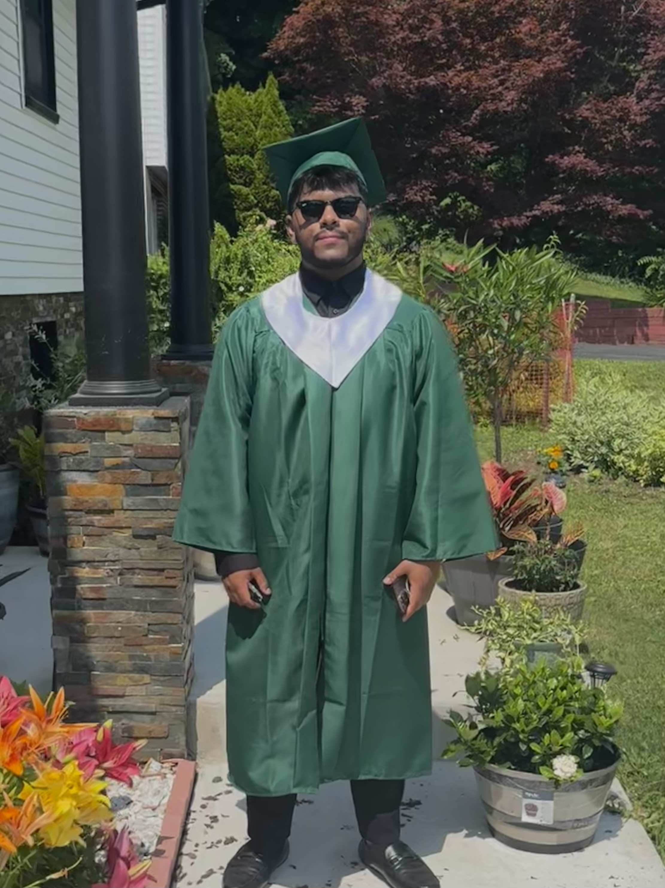

About Me

My name is Adian Ayman and my main goal in life is to become a software engineer and get a degree in computer science. My parents were born in Bangladesh and they came in the United States of America in the year 2006 when they had me. My passion is to make them proud and to retire my dad from working. I think studying is important to me because without studying I wouldn't be able to achieve my goals.